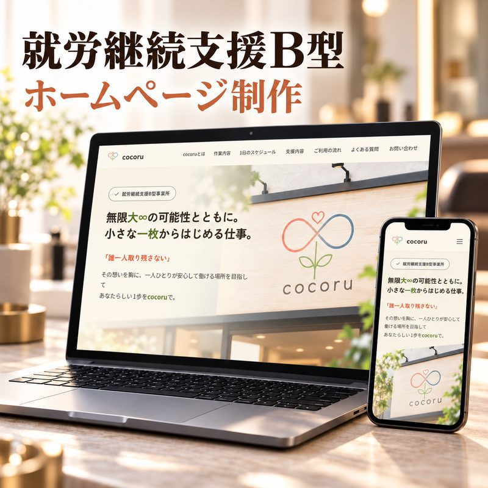
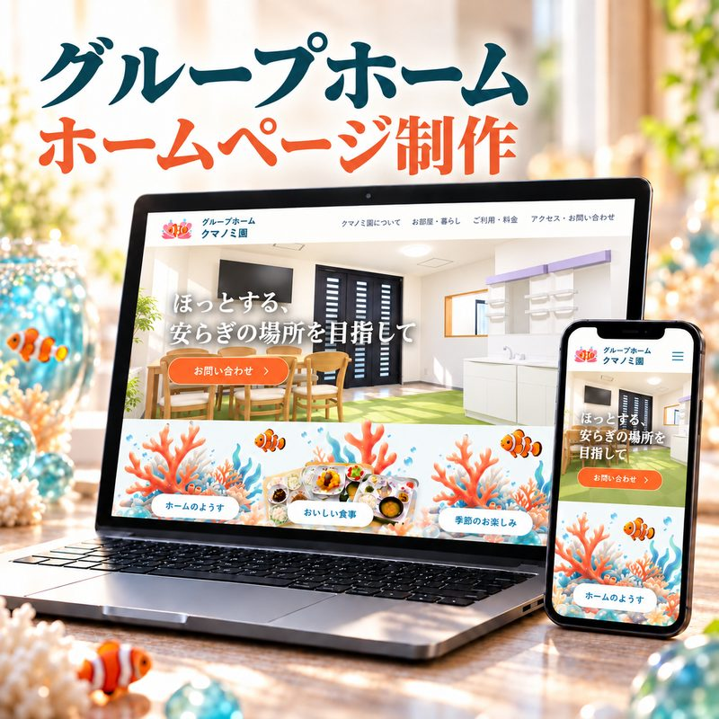
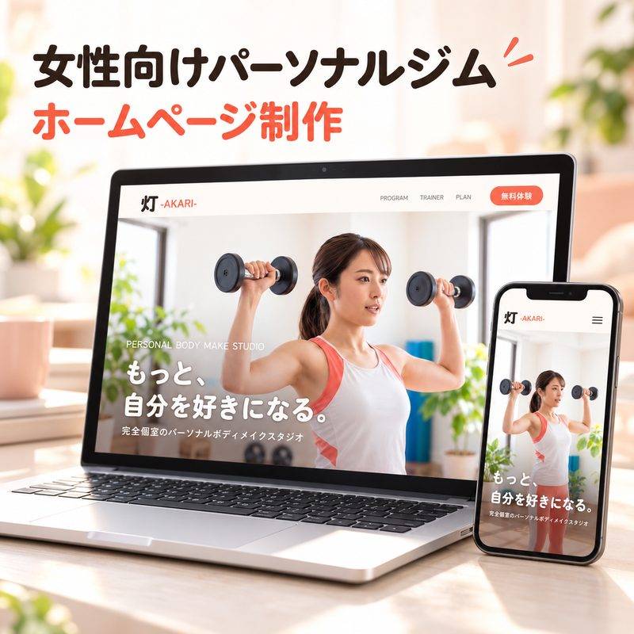
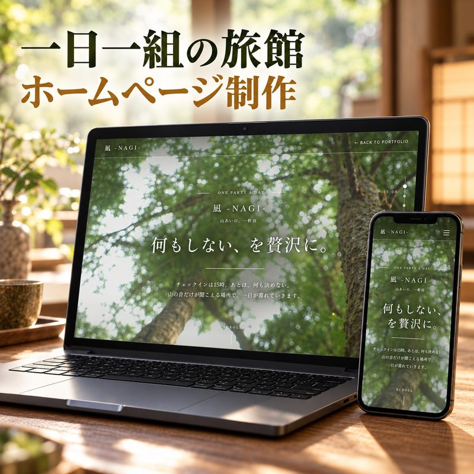

新座市精神障害者家族会「やすらぎの会」
制作費 55,000円3日間
福祉事業所のホームページ制作実績と、ほかの業種のモデルページです。
流れるカードから、気になるものを実物のサイトでご覧いただけます。
上の段は、実際にご依頼いただいた福祉事業所関連の制作実績。下の段は、ほかの業種でのデザインをお見せするモデルページです。カードを押すと、実物のサイトが開きます。
福祉事業所関連の制作実績
福祉・介護・医療の分野のホームページ
制作費 55,000円3日間

制作費 19,800円5日間

制作費 19,800円5日間

ブランディングプラン約1ヶ月間

制作費 19,800円7日間
その他の業種のモデルページ
福祉以外の業種でのデザイン例




表示価格がお支払いの総額です。消費税はかかりません。※各案件の制作実績です。制作内容・ページ数・原稿や写真の準備状況により、費用・期間は異なります。
ご相談の内容から、対応したこと、工夫したポイントまで。2つの事例を、ひとつずつご紹介します。
初めての方にも会の雰囲気や活動内容、参加方法が伝わるよう、会の紹介・年間予定・活動報告・入会案内・お問い合わせを整理した情報発信サイトです。
表示価格がお支払いの総額です。消費税はかかりません。
滋賀県豊郷町で新規開業する就労継続支援B型事業所様のホームページです。古着のリユース作業を通じた就労支援の内容を、開業前から安心して伝えられるよう制作しました。
表示価格がお支払いの総額です。消費税はかかりません。
福祉の現場で、ご利用者やご家族に聞かれることを思い出しながら、「何をしている場所か」「どう利用するか」「どこに相談するか」の順に整理します。
ご覧になる方の多くはスマートフォンです。文字の大きさや余白、ボタンの押しやすさまで、小さな画面で見ながら仕上げます。
制作費と公開までの期間を、はじめにお伝えします。表示価格がお支払いの総額で、消費税はかかりません。